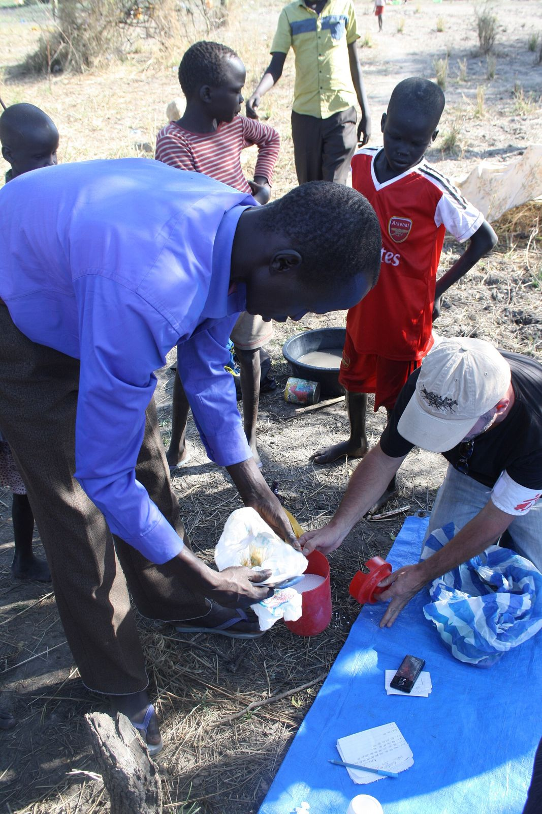
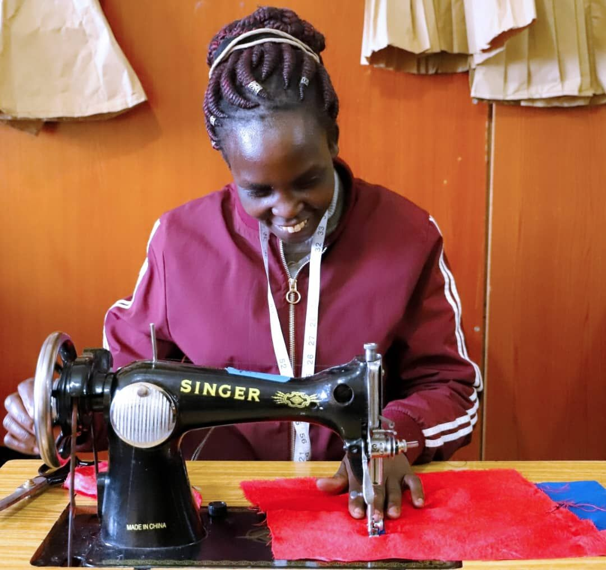
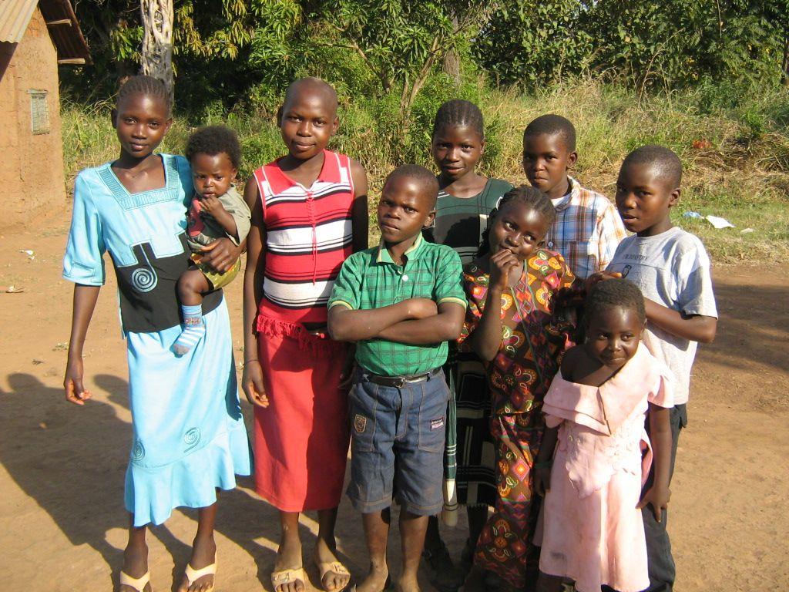
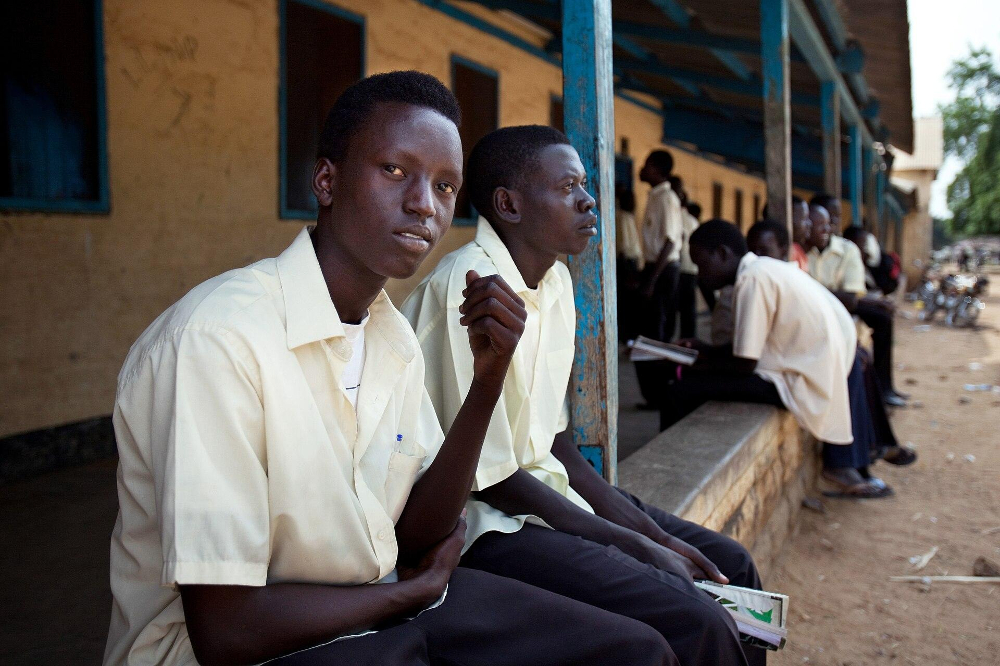

Priority
Education access
Help us build new community schools and upgrade existing ones, so more children, especially girls, can go to school and learn.
Donate to educationCYAFA South Sudan is a community based nonprofit working to protect children, strengthen families, and empower communities.
Children and Youths Advocate Foundation in Africa (CYAFA South Sudan) was founded to improve and uphold the rights of children and youth in communities across Africa. We work with high need, low resource families to prevent child abuse, reduce child poverty, and give every child a better chance in life.
About usNew community schools and upgrades to existing ones, with a special focus on the girl child.

Maternal and child health, immunization, safe drinking water and sanitation.

Self help groups, income generating activities and vocational training.
Access to credit and group savings for small enterprises.


We support healthy personality development, vocational skills, and professional development for long term sustainability.
We identify poor women and help them earn an income through self help groups, vocational training, and family welfare programs.
We guide young people toward their goals, offer vocational training and skills upgrading, create self employment opportunities, and encourage them to become role models for future generations.
Your donation helps children, women and youth in South Sudan. Choose the work you would like to support.
Help us build new community schools and upgrade existing ones, so more children, especially girls, can go to school and learn.
Donate to educationHelp us give free legal assistance to children who are victims of abuse, exploitation and trafficking.
DonateHelp bring safe drinking water, sanitation and basic health care to communities in neglected areas.
DonateHelp poor women join self help groups, learn vocational skills and earn an income.
DonateHelp young people get career guidance, vocational training and a path to self employment.
DonateTo donate, send us a message and our team will share how you can give.
To advocate for the rights of children and youth in the most marginalized communities in Africa. Our Mission
We work with government agencies, NGOs, and donor organizations that share our commitment to community development. If you want to partner, volunteer, or support our work, get in touch.